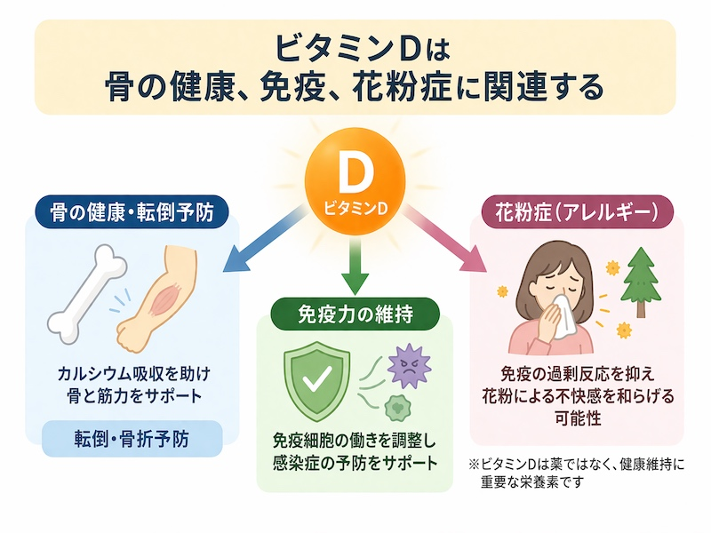

公開日：2026年6月｜最終更新：2026年6月
「ビタミンD」は、骨の健康に重要な栄養素として知られていますが、近年では「免疫」や「アレルギー」との関係も注目されています。 特に高齢者では不足しやすく、さまざまな健康リスク「転びやすさ」「感染症」「花粉症」につながる可能性があります。
ビタミンDはカルシウムの吸収を助けるだけでなく、筋肉の働きにも関係しています。
不足すると筋力低下やふらつきが起こりやすくなり、転倒のリスクが高まります。
ポイント：
ビタミンDは免疫細胞の働きを調整し、感染症への抵抗力に関係しています。 不足すると、風邪や肺炎などの感染症にかかりやすくなる可能性があります。
ポイント：
花粉症は免疫の過剰反応によって起こります。 ビタミンDはこの過剰な反応を抑える方向に働くため、不足すると症状が出やすくなる可能性があります。
ポイント：

これらの問題の背景には、「ビタミンD不足」があります。 特に高齢者では以下の理由で不足しやすくなります。
注意：
ビタミンDは医薬品ではなく、これだけで病気を治すものではありません。 症状がある場合は医療機関での相談が重要です。
ビタミンDは、骨・筋力・免疫・アレルギーに関わる重要な栄養素です。
不足を防ぐことは、「転倒予防」や「感染症対策」、さらには「花粉症対策」にもつながる可能性があります。